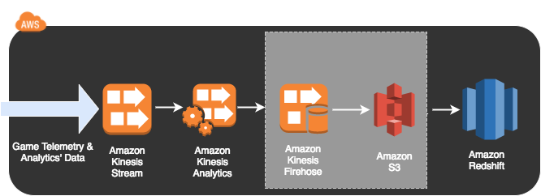

GAM310
Telemetry & Analytics’ Pipelines for Game Balancing
Lab 3 - Analytics on the Stream
Lab 3 - Analytics on the Stream
Now that you've got a feel for a standard analytics pipeline, as well as how you can take a serverless approach, let's look at how you can analyse data as it is passing through a stream.
To achieve this we're going to use Kinesis Analytics. The following diagram shows the architecture of this data pipeline:
For this lab we're going to use Kinesis Analytics in the web console. Please visit this link and create an application that uses your workshopTelemetryStream Kinesis Stream as the source, the Redshift table "telemetry2" as the destination, and uses the SQL statements below as the Kinesis Analytics Application. If you get stuck, step-by-step instructions are below:
1. Click on "Create application"
2. For "Application name" enter "telemetry2app" and click "Create application"
3. Under the "Source" section, click "Connect to a source"
4. Under "Select a stream" select "workshopTelemetryStream" and click the "Discover schema" button on the bottom left of the window. This will analyse the data that is passing through the stream and identify the schema of the data in it.
5. After about 30 seconds the data should appear. Check that it looks sensible and click "Save and continue"
6. Under the "Real time analytics" section click the "Go to SQL editor" button
7. A window will appear asking "Would you like to start running telemetry2app?". Click "Yes, start application"
8. Copy both the following SQL statements into the query editor and click the "Save and run SQL" button on the middle-right side of the window:
9. You should see the data appear in the "Real-time analytics" tab. This is real-time data. Let's see what happens when you change the query. Please change the query to the following SQL statements and click the "Save and run SQL" button on the middle-right side of the window:
10. Once you see the real-time data showing up and can see that it only shows DNF in the "result" column, click the "Destination" tab in the middle-left of the window
11. Click the "Connect to a destination" button
12. Under "Select a stream" select "workshopTelemetryFHDirect"
13. For "In-application stream name" select "WORKSHOP_TELEMETRY2_FH_STREAM" and click the "Save and continue" button
Congratulations, you've configured Kinesis Analytics! You can now click the "Go to SQL Results" if you want to see the results being processed in real-time, and you can also wait a few minutes and then query the results in Redshift that the Firehose Stream has inserted.
To do so, SSH into your instance, use the PGCLI command from your CloudFormation Stack Output, and enter the following query:
If you want to, you can configure QuickSight to view the data you're processing with Kinesis Analytics and pushing to Redshift.
QuickSight requires access to your S3 buckets. This can be done through your account settings, which are only available in N. Virginia. Go to Account Settings, then Account Permissions, and click the "Edit AWS permissions" button.
1. Go to https://quicksight.aws.
2. Click the "New analysis" button in the top left
3. Click the "New data set" button in the top left
4. Click the "Redshift - Auto-discovered" button
5. A "New Redshift data source" window will appear. For the "Data source name" enter "GamingWorkshop". For "Instance ID" click the drop-down arrow on the right of the selection box, and select "workshopcluster". The "Database name" should be automatically populated with "workshopdb", but you will need to enter a "Username" of "wsuser" and "Password" of "wsPassword0". Click the "Validate" button on the bottom left of the window. This should turn to "Validated" with a green tick if you're successful. Click "Create data source".
6. Select "telemetry2" and click the "Select" button on the bottom right
7. Select "Directly query your data" and click the "Visualize" button on the bottom right
8. Explore your data!
You've now completed Lab 3!
Note: When a reasonable amount of participants have progressed to this point, we will pause and present some slides explaining the next lab:
If you're keen, it's perfectly fine to proceed - but it's recommended that you hit the button below and then take a break for a moment until a reasonable number of participants are ready to proceed.